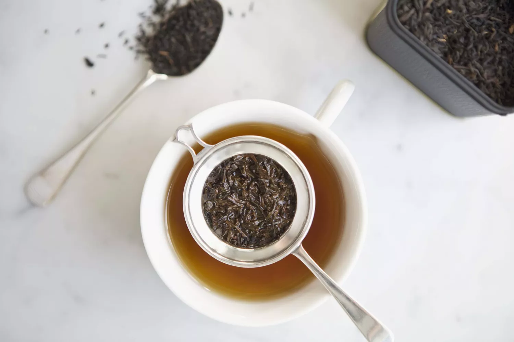

Home
Earl Grey

Earl Grey is one of the most recognizable teas in the world.
No other tea conjures such images of a comforting brew than that called by
the name 'Earl Grey'. Most often flavored with bergmagot oil, it works great as
either a morning or evening tea. But careful, it's easy to oversteep this strong
leaf, so treating it with a light hand is often the best approach. The instructions
below have never produced a disappointing cup, so I hope the same will work for you.
Ingredients
- Water (filtered is preferable)
- Earl Grey tea leaves from your favorite vendor
Tools
- Kettle
- Tea Pot & Tea Cups
- Food Scale (optional)
Directions
- Heat water in kettle to 212° fahrenheit / 100° celsius
- Measure leaves - I prefer 2 grams of leaves per 200ml of water
but feel free to adjust to your tastes. However, keep in mind that this tea, although
smooth, can easily turn out too strong if the tea is measured too liberally.
- Place leaves in teapot and pour the heated water over the leaves
- Let steep for 3-4 minutes
- Strain the tea into cups and serve